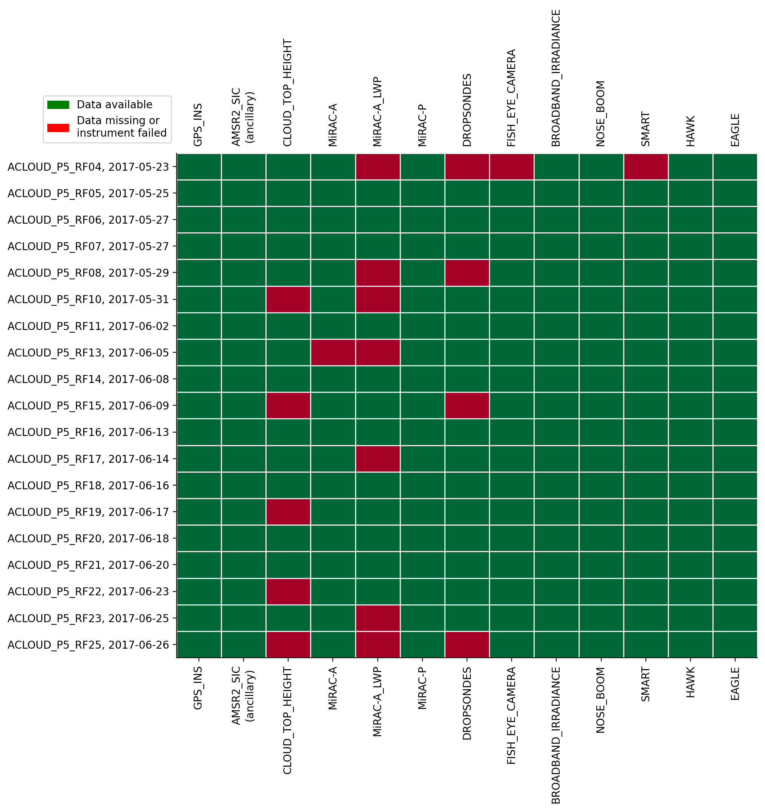
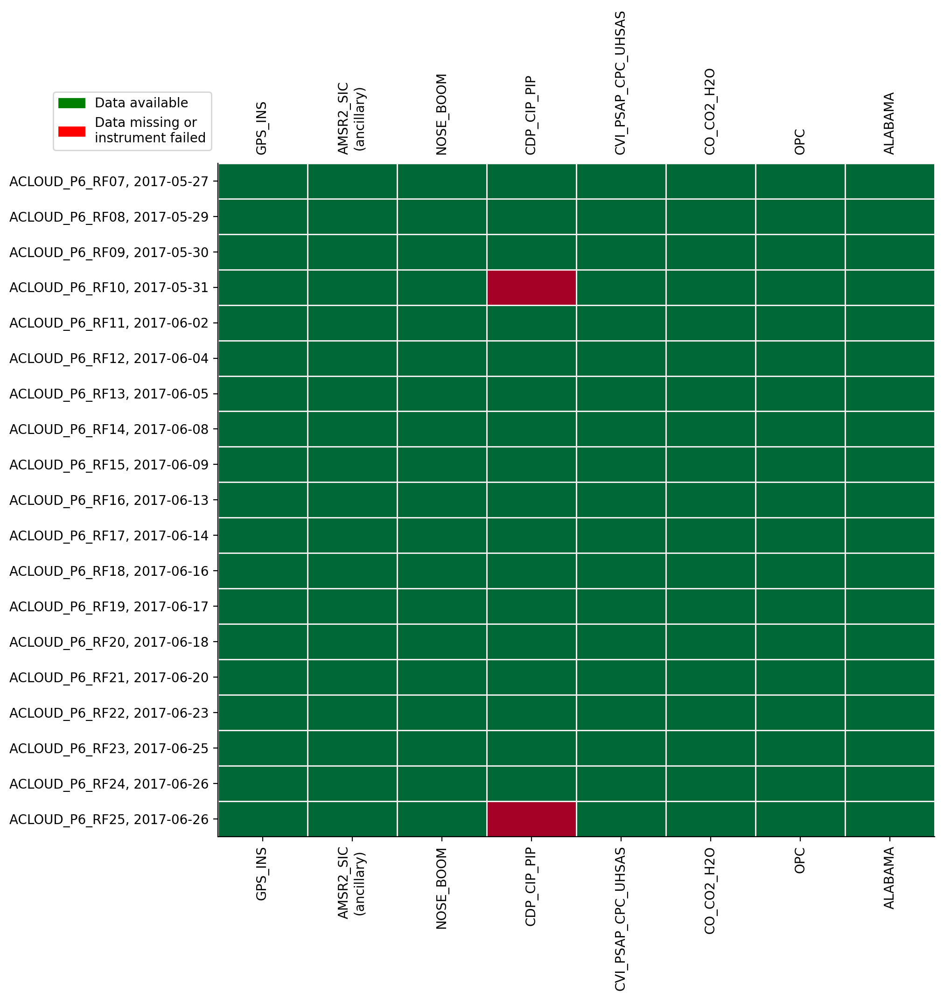
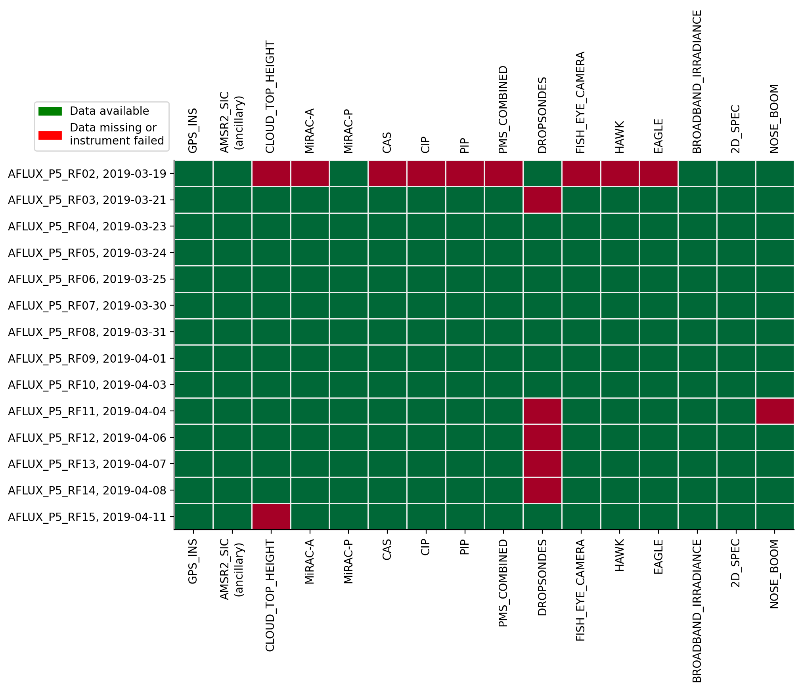
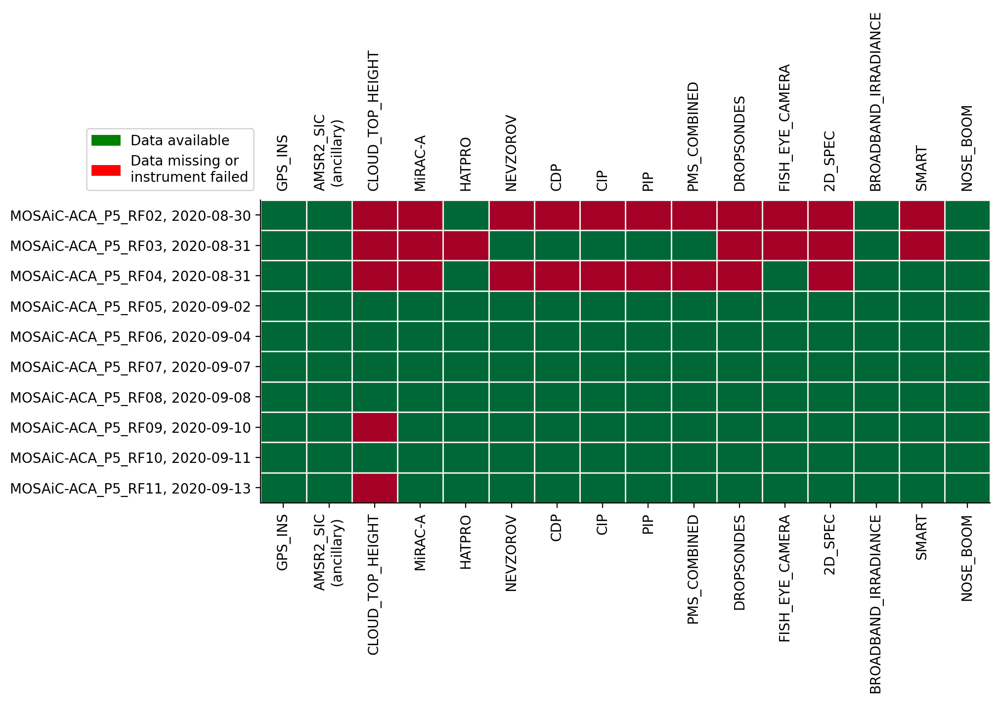
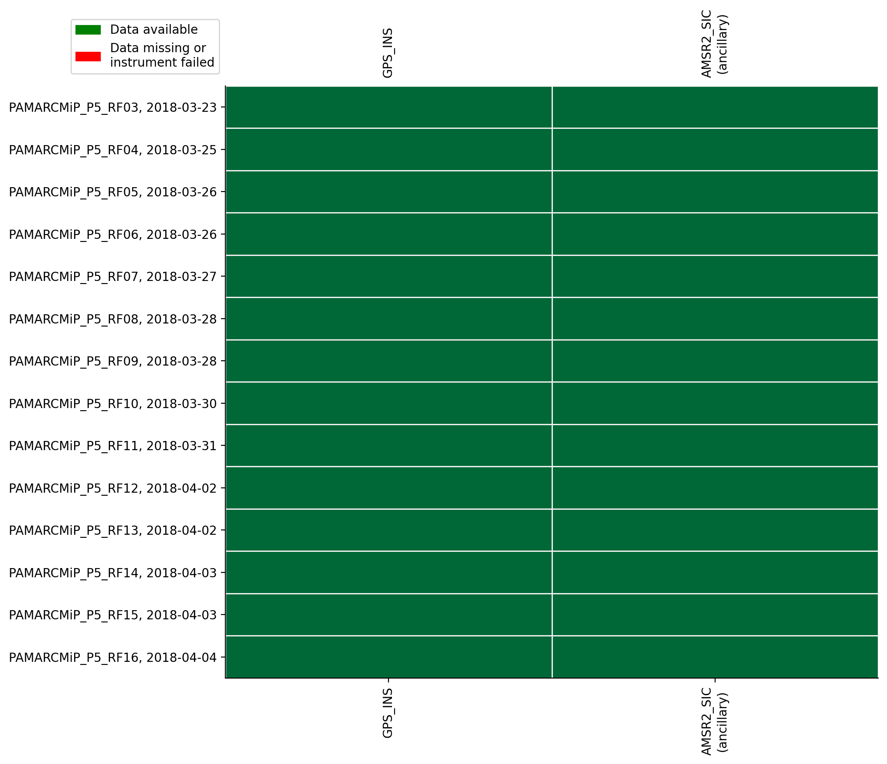
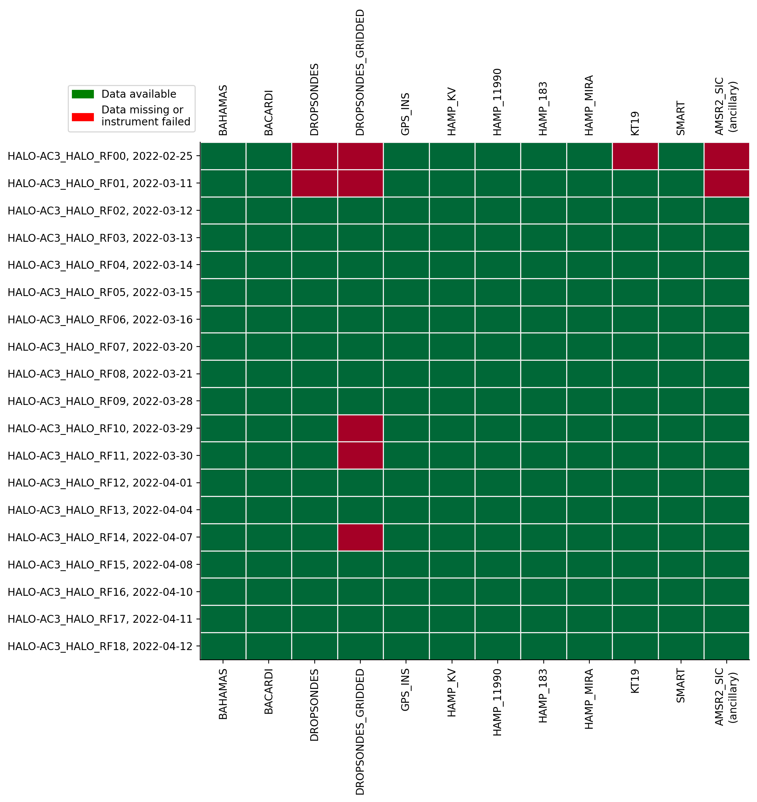
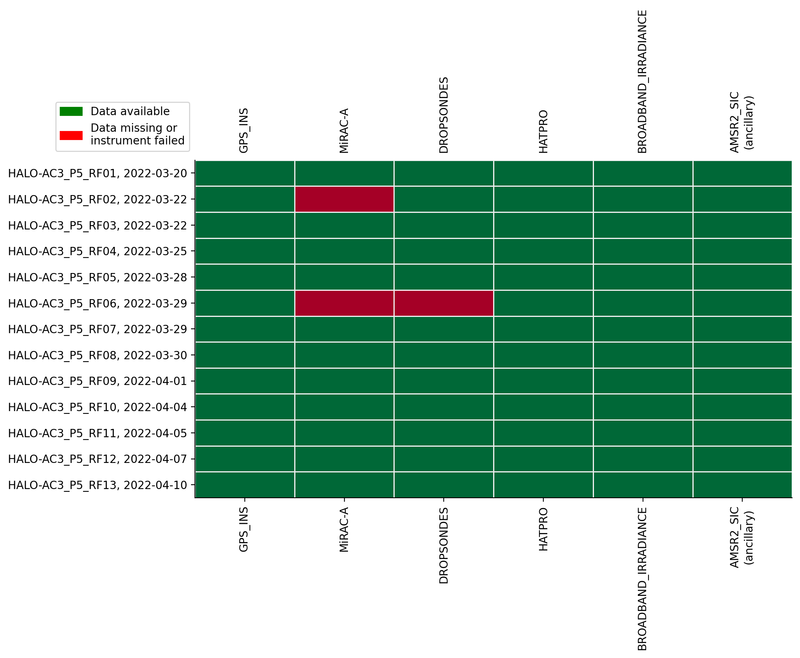
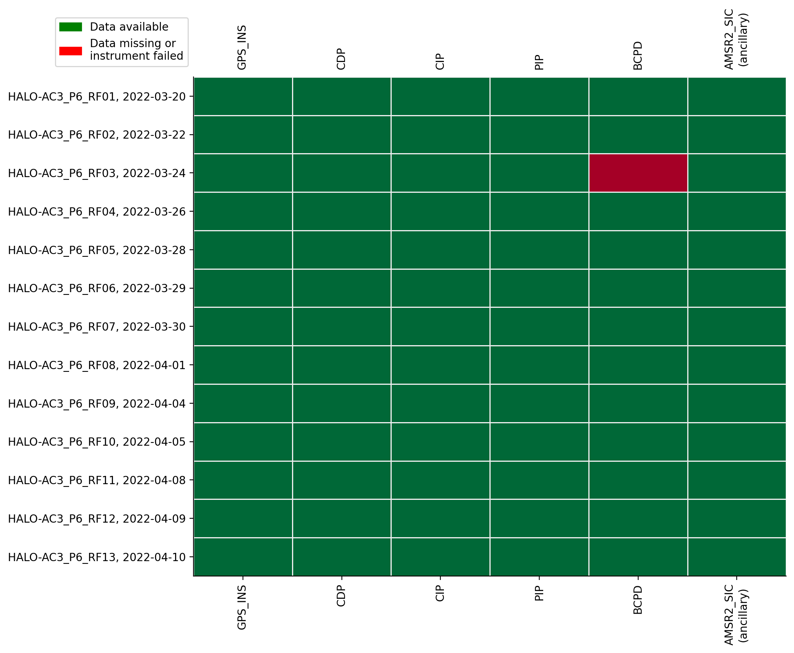

Datasets#
During the campaigns different instruments have been operated on various platforms in the framework of (AC)3. As platforms the Polar 5 and Polar 6 aircraft of the Alfred-Wegener-Institute for Polar- and Marine research and the HALO aircraft operated by the DLR have been used. More information on the aircaft can be found on HALO-AC3.
The overview below shows the datasets available via the intake catalog for each research flight.
%matplotlib inline
import ac3airborne
import matplotlib.pyplot as plt
import matplotlib.patches as mpatches
import numpy as np
plt.style.use("mplstyle/book")
# load intake catalog and flight segments
cat = ac3airborne.get_intake_catalog()
meta = ac3airborne.get_flight_segments()
ancillary = ['AMSR2_SIC']
def data_availability(mission, platform):
"""
Plot data availability matrix
"""
# store data availability in a matrix
data_availability = np.zeros(shape=(len(list(cat[mission][platform])),
len(list(meta[mission][platform]))))
for i, dataset in enumerate(list(cat[mission][platform])):
data_availability[i, :] = np.isin(list(meta[mission][platform]),
list(cat[mission][platform][dataset]))
# plot data availability
yscale = data_availability.shape[1]
fig, ax = plt.subplots(1, 1, figsize=(10, 3+0.4*yscale))
ax.pcolormesh(range(data_availability.shape[0]),
range(data_availability.shape[1]),
data_availability.T,
shading='nearest',
vmin=0,
vmax=1,
cmap='RdYlGn',
edgecolors='#eeeeee')
ax.set_xticks(range(data_availability.shape[0]))
ax.set_yticks(range(data_availability.shape[1]))
xlabels = []
for ds_name in list(cat[mission][platform]):
if ds_name in ancillary:
ds_name += '\n(ancillary)'
xlabels.append(ds_name)
ax.set_xticklabels(xlabels, rotation=90)
y_labels = [flight_id+', '+flight['date'].strftime('%Y-%m-%d')
for flight_id, flight in meta[mission][platform].items()]
ax.set_yticklabels(y_labels)
ax.tick_params(labeltop=True)
ax.invert_yaxis()
available = mpatches.Patch(color='green', label='Data available')
not_flown = mpatches.Patch(color='red', label='Data missing or\ninstrument failed')
ax.legend(handles=[available, not_flown], ncol=1,
bbox_to_anchor=(0, 1.01), loc='lower right')
plt.show()
---------------------------------------------------------------------------
ValidationError Traceback (most recent call last)
Cell In[1], line 9
6 plt.style.use("mplstyle/book")
8 # load intake catalog and flight segments
----> 9 cat = ac3airborne.get_intake_catalog()
10 meta = ac3airborne.get_flight_segments()
12 ancillary = ['AMSR2_SIC']
File ~/miniconda3/envs/how_to_ac3airborne/lib/python3.12/site-packages/ac3airborne/__init__.py:60, in get_intake_catalog()
53 def get_intake_catalog():
54 """
55 Open the intake data catalog.
56
57 The catalog provides access to public AC3 airborne datasets without the need to
58 manually specify URLs to the individual datasets.
59 """
---> 60 return intake.open_catalog("https://raw.githubusercontent.com/igmk/ac3airborne-intake/main/catalog.yaml")
File ~/miniconda3/envs/how_to_ac3airborne/lib/python3.12/site-packages/intake/__init__.py:184, in open_catalog(uri, **kwargs)
177 raise ValueError(
178 f"Unknown catalog driver '{driver}'. "
179 "Do you need to install a new driver from the plugin directory? "
180 "https://intake.readthedocs.io/en/latest/plugin-directory.html\n"
181 f"Current registry: {list(sorted(registry))}"
182 )
183 try:
--> 184 return registry[driver](uri, **kwargs)
185 except VersionError:
186 # warn that we are switching to V2? The file will be read twice
187 return from_yaml_file(uri, **kwargs)
File ~/miniconda3/envs/how_to_ac3airborne/lib/python3.12/site-packages/intake/catalog/local.py:613, in YAMLFileCatalog.__init__(self, path, text, autoreload, **kwargs)
611 self.filesystem = kwargs.pop("fs", None)
612 self.access = "name" not in kwargs
--> 613 super(YAMLFileCatalog, self).__init__(**kwargs)
File ~/miniconda3/envs/how_to_ac3airborne/lib/python3.12/site-packages/intake/catalog/base.py:128, in Catalog.__init__(self, entries, name, description, metadata, ttl, getenv, getshell, persist_mode, storage_options, user_parameters)
126 self.updated = time.time()
127 self._entries = entries if entries is not None else self._make_entries_container()
--> 128 self.force_reload()
File ~/miniconda3/envs/how_to_ac3airborne/lib/python3.12/site-packages/intake/catalog/base.py:186, in Catalog.force_reload(self)
184 """Imperative reload data now"""
185 self.updated = time.time()
--> 186 self._load()
File ~/miniconda3/envs/how_to_ac3airborne/lib/python3.12/site-packages/intake/catalog/local.py:648, in YAMLFileCatalog._load(self, reload)
646 logger.warning("Use of '!template' deprecated - fixing")
647 text = text.replace("!template ", "")
--> 648 self.parse(text)
File ~/miniconda3/envs/how_to_ac3airborne/lib/python3.12/site-packages/intake/catalog/local.py:728, in YAMLFileCatalog.parse(self, text)
726 result = CatalogParser(data, context=context, getenv=self.getenv, getshell=self.getshell)
727 if result.errors:
--> 728 raise exceptions.ValidationError(
729 "Catalog '{}' has validation errors:\n\n{}"
730 "".format(self.path, "\n".join(result.errors)),
731 result.errors,
732 )
734 cfg = result.data
736 self._entries = {}
ValidationError: Catalog 'https://raw.githubusercontent.com/igmk/ac3airborne-intake/main/catalog.yaml' has validation errors:
("missing 'module'", {'module': 'intake_xarray'})
ACLOUD#
P5#
data_availability(mission='ACLOUD', platform='P5')

P6#
data_availability(mission='ACLOUD', platform='P6')

AFLUX#
P5#
data_availability(mission='AFLUX', platform='P5')

MOSAiC-ACA#
P5#
data_availability(mission='MOSAiC-ACA', platform='P5')

PAMARCMiP#
P6#
data_availability(mission='PAMARCMiP', platform='P5')

HALO-AC3#
HALO#
data_availability(mission='HALO-AC3', platform='HALO')

P5#
data_availability(mission='HALO-AC3', platform='P5')

P6#
data_availability(mission='HALO-AC3', platform='P6')
